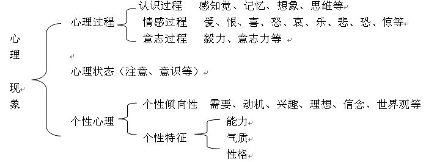

00:00
第二章 心理咨询技能
附录-1 心理咨询师的职业理念与原则要求
要成为一名合格的心理咨询师，在学习理论知识和职业技能之前，首先必须先理解和掌握心理咨询师的职业理念和原则问题。
心理咨询师的职业理念
心理咨询师的职业理念可以概括为下面的三句话，这也可以称为心理咨询师的职业生命线：
心理咨询师：求助者的心理问题是否得到科学有效的解决？
求助者的身心健康是否得到最大的维护？
心理咨询师的身心健康是否得到最大的维护？
03:02
一、一条主线：心理咨询师要回答，求助者的心理问题是否得到科学有效的解决？
（一）对心理咨询师工作对象的理解
1.求助者的定义：求助者是指存在（含不存在）心理方面的问题，主动前来求助，解决自身心理问题的那些人。
2.对求助者定义的理解
第一，存在或不存在心理问题的人都可能成为求助者。
第二，只有前来求助的人才可能是求助者。
第三，心理咨询只能解决求助者自身的心理问题。
13:20
（二）对心理咨询工作内容的理解
咨询师在心理咨询工作中到底应该做些什么?
1.区分何为心理问题，何为具体问题不是求助者的工作，而是心理咨询师的任务。
2.心理咨询所要解决的就是帮助求助者解决心理问题。
3.心理咨询的内容应该是属于心理学范畴，不属于心理学范畴的不应该成为心理咨询的内容。
4.在普通心理学中已非常明确指出包含在心理现象中的内容是属于心理学的范畴。

23:33
（三）科学地帮助求助者解决心理问题
心理咨询师需要用科学的理论和方法去帮助求助者解决心理问题。
科学的解决方法是促进其心理成长，使其自己解决自身的问题。
心理咨询师不能依靠热情等非心理学的方法来帮助求助者解决心理问题。
（四）有效地帮助求助者解决心理问题
心理咨询要有明确的目标，心理咨询师的一项非常重要的基本功就是与求助者商定咨询目标.
二、两条辅线：
1.要维护求助者的身心健康，不能以损害求助者身心健康为代价来帮助求助者解决心理问题。
2.心理咨询师的身心健康是否得到最大的维护？